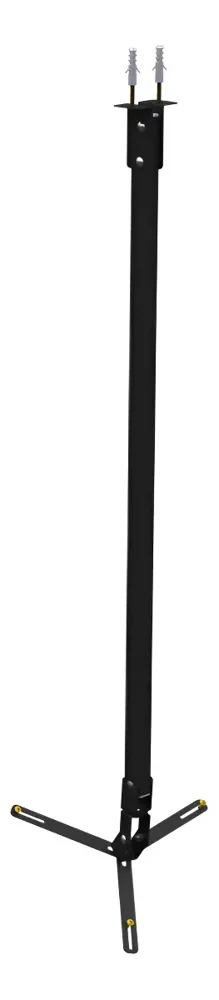
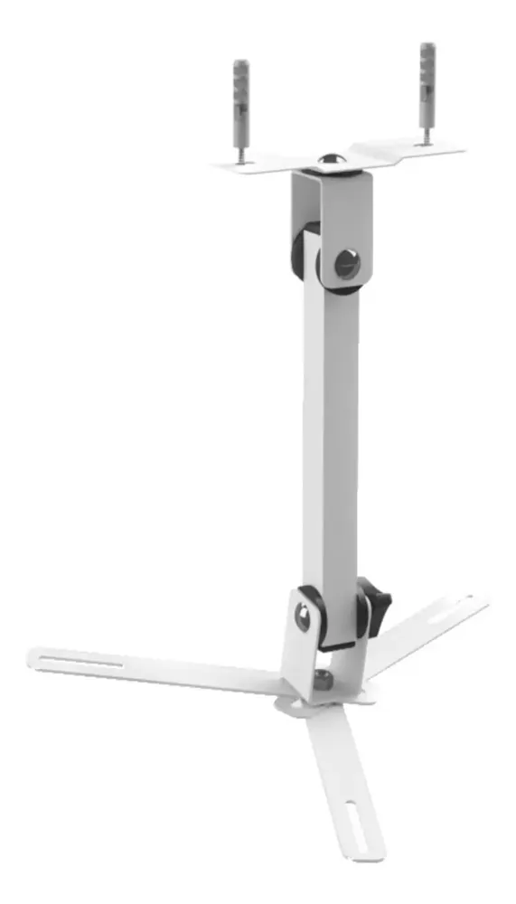
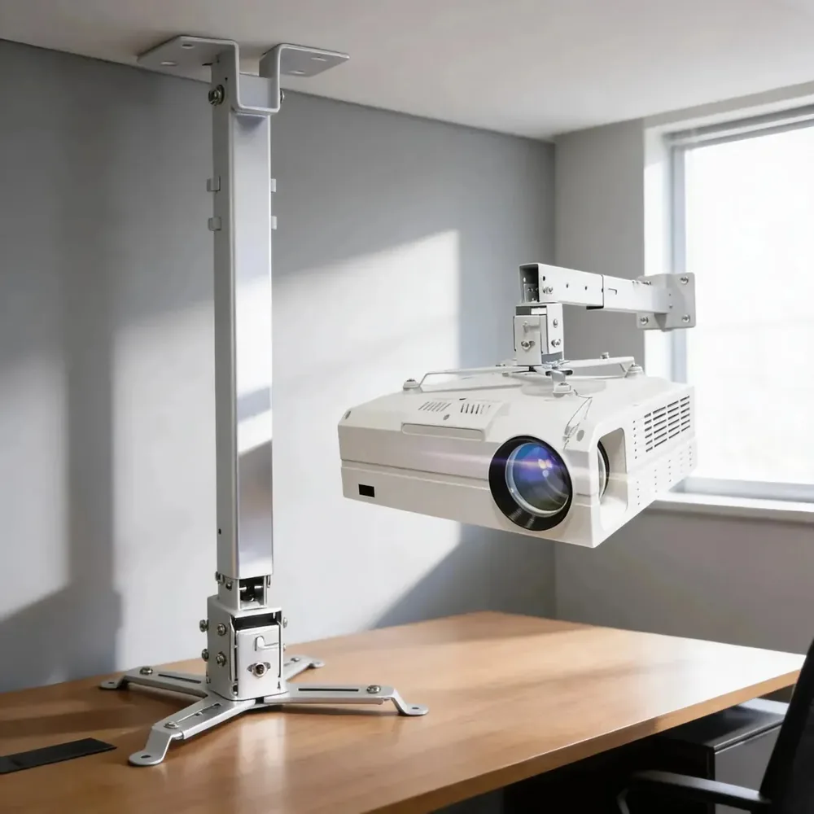
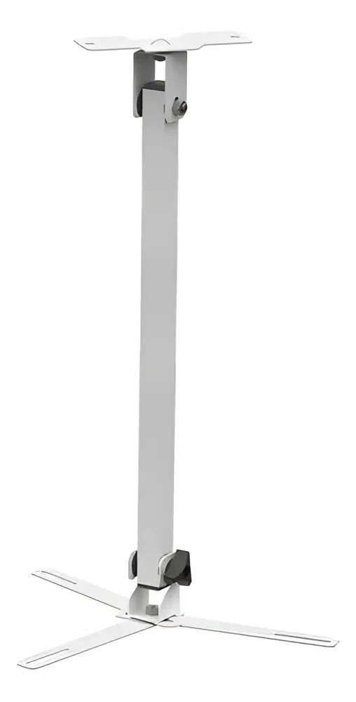
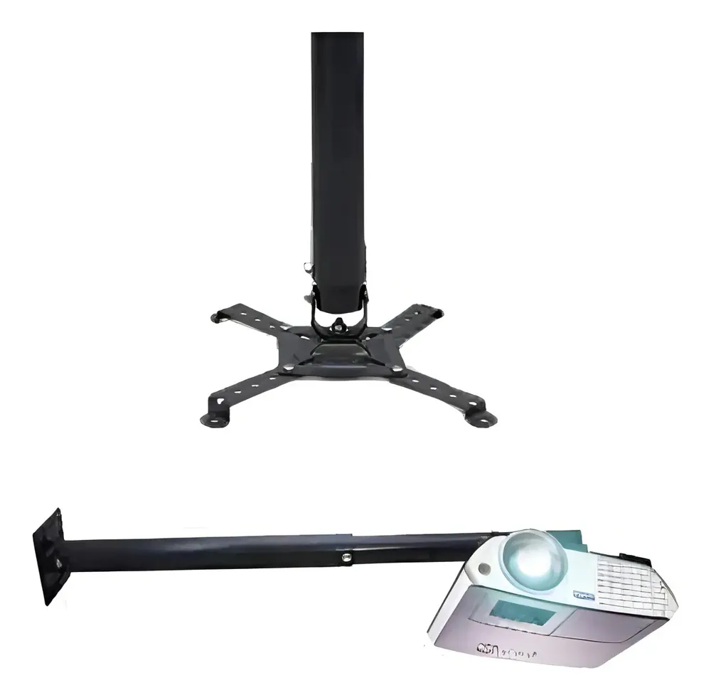

Suporte Braço Longo 90-170cm
Suporte de entrada com braço telescópico de 90 a 170cm — pra sala alta
Braço telescópico ajustável de 90 a 170cm, base com furação central. Não tem suporte com furação 4 pontos padronizada, mas o design abre os braços nos 4 cantos e cobre boa parte dos projetores domésticos. Pintura preta, discreta em ambiente comercial. Pra galpão, salão de festa ou sala com pé direito 3m+ — desce o projetor até onde a projeção fica certa.
Braço telescópico 90 a 170cm
Pintura preta — discreta em comercial
Fixação por furação central
Aguenta até 3 kg — passar disso é risco real. E como não é furação 4 pontos padronizada, nem todo projetor encaixa: meça a sua base antes de comprar. Pra projetor mais pesado, vai no Supratick 25 kg.
Onde comprar
Mercado Livre
R$ 179,18
Sobre as lojas: não são lojas próprias da SchardTech — são parceiros que escolho a dedo pesquisando preço, avaliação e custo-benefício. Quando você compra pelos links, o canal recebe uma comissão sem custo extra pra você. Os preços podem variar — confira no anúncio antes de fechar.
Especificações (Mercado Livre)
- MarcaMultiforma
- ModeloMFPJSE-170
- CorPreto
- Tipo de instalaçãoTeto
- MaterialAço e Pintura Epóxi
- Carga máxima do suporte3 kg
- Grau de inclinação90°
- Grau giratório360°
- Grau de rotação360°
- Diâmetro do tubo3 cm
Mais suportes de teto

Básico
Suporte Teto/Parede Compacto 20cm
Suporte de entrada — até 3 kg, discreto no teto
Ver detalhes

Universal
Suporte Universal Regulável
4 braços ajustáveis individualmente — encaixa em furação fora do padrão
Ver detalhes

Intermediário
Suporte Teto com Braço de 40cm
Suporte de entrada com braço de 40cm — afasta o projetor do teto
Ver detalhes

Premium
Suporte Premium 25kg — Supratick
Aço carbono — pra projetor pesado de cinema ou escritório
Ver detalhes